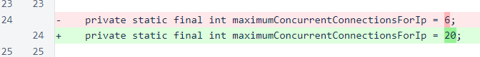

Nyzo version 496 (commit on GitHub) corrects a verifier issue with 495 that might affect the sentinel.
This update should be installed on the verifier, but it does not need to be installed on the sentinel.
One of the mechanisms introduced in version 495 was a dynamic blacklisting based on the number of incoming connections per IP. In post-release testing, this dynamic blacklisting was found to be triggered in some cases by sentinel traffic, which would temporarily disable communication between a sentinel and one of its managed verifiers.
In the long term, we hope to be able to reduce the maximum concurrency per IP to just a single connection. This is the value that provides maximum protection against denial-of-service attacks. We also plan to introduce a whitelisting system that allows verifiers to exclude trusted IPs from the blacklist. However, the quickest, simplest short-term solution is an increase in the maximum concurrency.
In the MeshListener class, the maximum concurrency value has been increased from 6 to 20.
Additionally, the maximum concurrency value on verifier0.nyzo.co has been manually set to 100 to allow scripts that access this verifier to run with fewer restrictions.